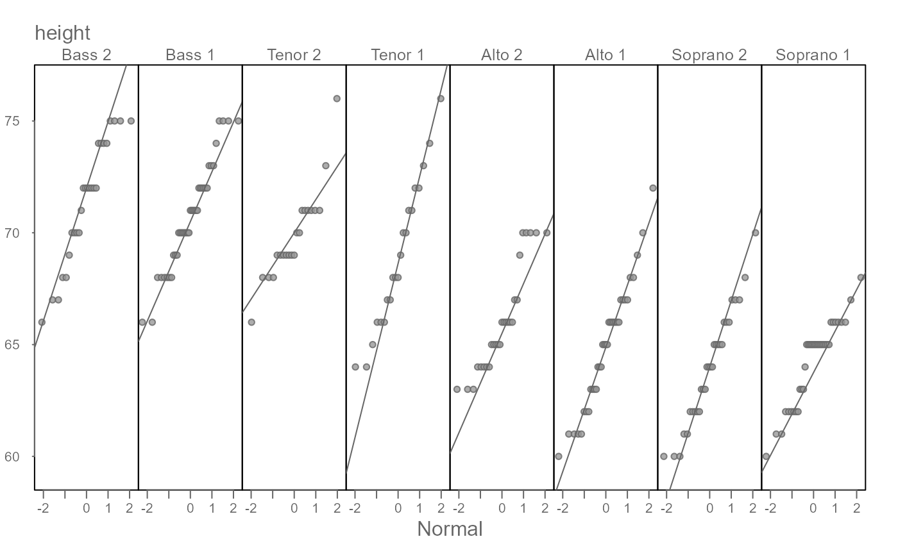
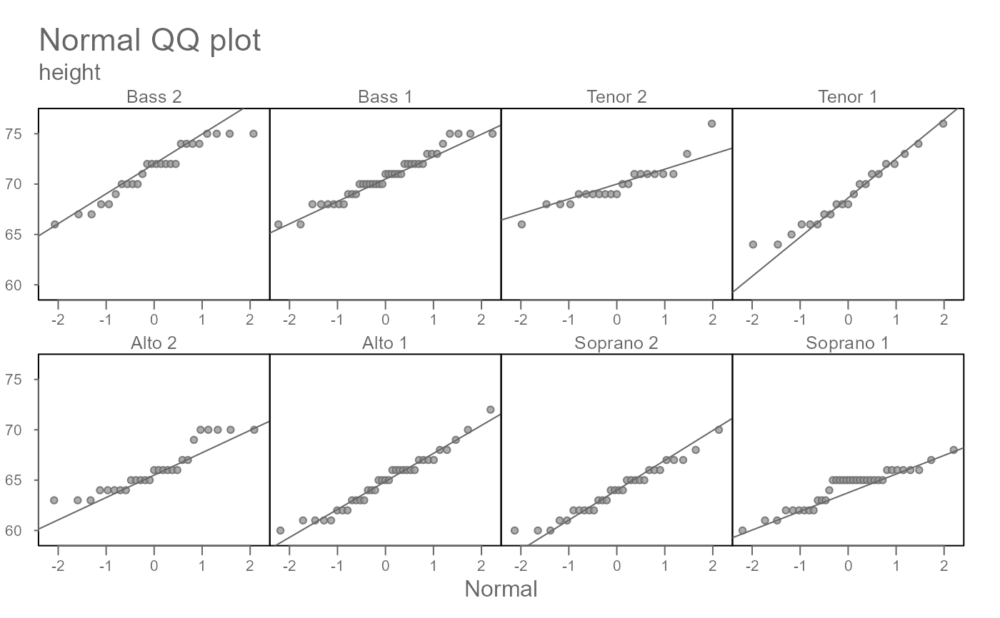
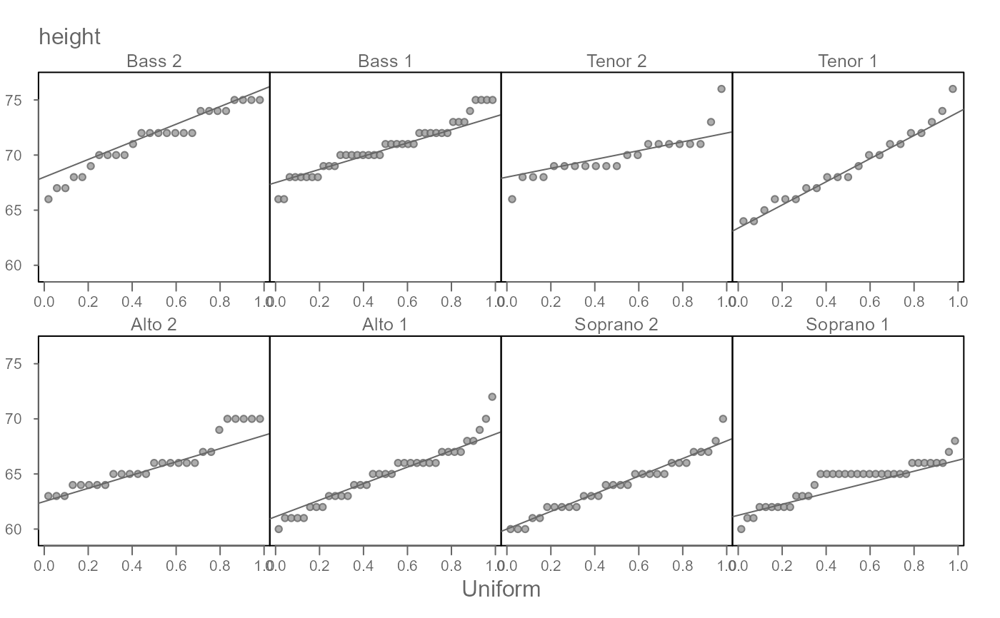
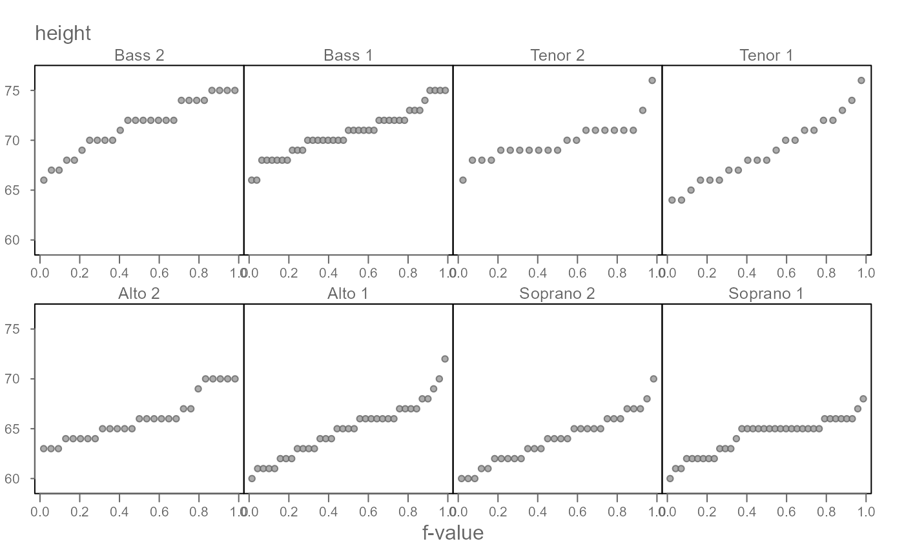
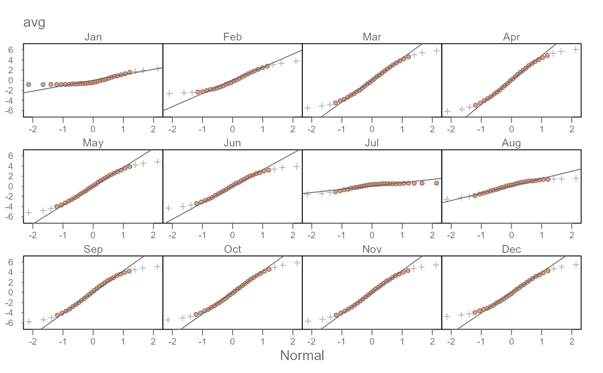

eda_theopan generates a multi-panel theoretical QQ plot
for a continuous variable conditioned on a grouping variable.
Usage
eda_theopan(
dat,
x,
fac,
p = 1L,
tukey = FALSE,
q.type = 5,
dist = "norm",
dist.l = list(),
ylim = NULL,
resid = FALSE,
stat = mean,
show.par = FALSE,
plot = TRUE,
grey = 0.6,
pch = 21,
nrow = 1,
p.col = "grey40",
p.fill = "grey60",
size = 1,
text.size = 0.8,
tail.pch = 21,
tail.p.col = "grey70",
tail.p.fill = NULL,
tic.size = 0.7,
alpha = 0.8,
q = FALSE,
tails = FALSE,
med = FALSE,
inner = 0.75,
iqr = TRUE,
title = FALSE,
xlab = NULL,
ylab = NULL,
...
)Arguments
- dat
Data frame.
- x
Continuous variable.
- fac
Categorical variable.
- p
Power transformation to apply to the continuous variable.
- tukey
Boolean determining if a Tukey transformation should be adopted (
FALSEadopts a Box-Cox transformation).- q.type
An integer between 4 and 9 selecting one of the nine quantile algorithms. (See
eda_fvalfor a list of quantile algorithms).- dist
Theoretical distribution to use. Defaults to Normal distribution.
- dist.l
List of parameters passed to the distribution quantile function.
- ylim
Y axes limits.
- resid
Boolean determining if residuals should be plotted. Residuals are computed using the
statparameter.- stat
Statistic to use if residuals are to be computed. Currently
mean(default) ormedian.- show.par
Boolean determining if power transformation should be displayed in the plot.
- plot
Boolean determining if plot should be generated.
- grey
Grey level to apply to plot elements (0 to 1 with 1 = black).
- pch
Point symbol type.
- nrow
Define the number of rows for panel layout.
- p.col
Color for point symbol.
- p.fill
Point fill color passed to
bg(Only used forpchranging from 21-25).- size
Point symbol size (0-1).
- text.size
Size for category text above the plot.
- tail.pch
Tail-end point symbol type (See
tails).- tail.p.col
Tail-end color for point symbol (See
tails).- tail.p.fill
Tail-end point fill color passed to
bg(Only used fortail.pchranging from 21-25).- tic.size
Size of tic labels (defaults to 0.8).
- alpha
Point transparency (0 = transparent, 1 = opaque). Only applicable if
rgb()is not used to define point colors.- q
Boolean determining if grey box highlighting the
innerregion should be displayed.- tails
Boolean determining if points outside of the
innerregion should be symbolized differently. Tail-end points are symbolized via thetail.pch,tail.p.colandtail.p.fillarguments.- med
Boolean determining if median lines should be drawn.
- inner
Fraction of mid-values to highlight in
qortails. Defaults to the inner 75% of values.- iqr
Boolean determining if an IQR line should be fitted to the points.
- title
Title to display. If set to
TRUE, defaults to theoretical distribution type. If set toFALSE, omits title from output. Custom title can also be passed to this argument.- xlab
X-axis label.
- ylab
Y-axis label.
- ...
Not used
Value
Returns a list with the following components:
data: List with inputxandyvalues for each group. May be interpolated to smallest quantile batch if batch sizes don't match. Values will reflect power transformation defined inp
.
Details
The function will generate a multi-panel theoretical QQ plot.
Currently, only the Normal QQ plot (dist="norm"), exponential
QQ plot (dist="exp"), uniform QQ plot (dist="unif"),
gamma QQ plot (dist="gamma"), chi-squared QQ plot
(dist="chisq"), and the Weibull QQ plot (dist="weibull") are
currently supported. By default, the Normal QQ plot maps the unit Normal
quantiles to the x-axis (i.e. centered on a mean of 0 and standard deviation
of 1 unit).
Examples
# Default output
singer <- lattice::singer
eda_theopan(singer, height, voice.part)

# Split into two rows
eda_theopan(singer, height, voice.part, nrow = 2, title = TRUE)

# Compare to a uniform distribution
eda_theopan(singer, height, voice.part, nrow = 2, dist = "unif")

# A uniform QQ plot is analogous to a Q(f) plot
eda_theopan(singer, height, voice.part, nrow = 2, dist = "unif",
iqr = FALSE, xlab = "f-value")

# Normal QQ plots of Waterville daily averages. Mean monthly values are
# subtracted from the data to recenter all batches around 0. Color and point
# symbols are used to emphasize the inner core of the data (here set to the
# inner 80% of values)
wat <- tukeyedar::wat05
wat$month <- factor(format(wat$date,"%b"), levels = month.abb)
eda_theopan(wat,avg, month, resid = TRUE, nrow = 3, inner = 0.8 ,
tails = TRUE, tail.pch = 3, p.fill = "coral")
